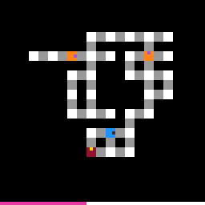

tu93
Move the player along bridges, avoiding sentries, patrols and chasers; walking onto the goal clears the level.
9 levels · 10 rules · all levels replayed in Lean
Replay
The certified run that cleared every level, one action at a time. Beside each step: the rules of the model that explain it; they are also marked in the rule list below.

Explained by
Press Play or step to load the run. Keys, while the player is on screen: ← → step, Space play / pause. A click is circled; cells that changed are outlined.
How it plays
The cells are connected by grey bridges. The blue one is the player, and the small mark on it shows its facing; the green cell is the goal. Press a direction key: if there is a bridge in that direction, the player moves over one cell, then each orange patrol walks one cell along its bridge (turning around at the end), and each awake dark-red chaser pounces one cell along the shortest path toward the cell the player was on; if there is no bridge in that direction, nobody moves. Walking onto the goal clears the level. Red sentries stand still and stare at the cell right in front of them: stepping into that cell from the front loses, while stepping into their cell from the side or from behind can trample them away; patrols and sleeping chasers can also be trampled from the side. Being landed on by a patrol or chaser loses, and if in the same step that the player walks onto the goal a patrol also lands on the goal, it likewise counts as a loss. A chaser wakes when the player walks to within two cells in front of it. The budget band along the bottom edge gets a notch shorter with each press, and reaching zero also counts as a loss.

Model
The final model: 8 object types and 10 rules. Each rule is a Python check against every recorded step; 8 of them are translated into Lean (the paper's per-game table). Code under a rule is the file of the same name in the agent's Lean project.
Object types
- Bridges
bridgesWhich pairs of cells have a grey bridge between them and are passable.Lean · Bridge.lean
-- Board.bridges : List Bridge structure Bridge where a : Cell b : Cell deriving DecidableEq, Repr - Goal
targetThe green cell; stepping onto it clears the level.Lean · Cell.lean
-- Board.target : Option Cell structure Cell where row : Nat col : Nat deriving DecidableEq, Repr - Player
playerWhich cell the blue block stands on.Lean · Cell.lean
-- St.player : Cell structure Cell where row : Nat col : Nat deriving DecidableEq, Repr - Facing
facingWhich way the player's small mark points; after moving, it points the way just moved.Lean · Dir.lean
-- St.facing : Dir inductive Dir where | up | down | left | right deriving DecidableEq, Repr - Sentries
sentriesRed; stands still and stares at the cell right in front.Lean · Guard.lean
-- St.sentries : List Guard structure Guard where cell : Cell facing : Dir alert : Bool deriving DecidableEq, Repr - Patrols
patrolsOrange; per real player step, walks one cell along its bridge, turning around at ends.Lean · Guard.lean
-- St.patrols : List Guard structure Guard where cell : Cell facing : Dir alert : Bool deriving DecidableEq, Repr - Chasers
chasersDark red; still until awake, then pounces toward the player along the shortest path.Lean · Guard.lean
-- St.chasers : List Guard structure Guard where cell : Cell facing : Dir alert : Bool deriving DecidableEq, Repr - Budget band
hudThe bottom row of the screen: how many steps remain this level.Python only
Rules
player_movesThe player moves one cell along a bridge, turning its mark; without one, it stays.Python
from __future__ import annotations from derive.succ import landing from objects import parse_action from .._common import world from .._scope import step … def scope_(prev, action, nxt, ctx=None): return step(prev, action, nxt, ctx) def assert_(prev, action, nxt, ctx=None): if scope_(prev, action, nxt, ctx): return "NA" w, nw, d = world(prev), world(nxt), parse_action(action) q = landing(w, d) want = (q, d) if q is not None else (w.player, w.facing) return "TRUE" if (nw.player, nw.facing) == want else "FALSE"Lean · PlayerMoves.lean
import Obj.World import Obj.Derive.Graph.Linked namespace Game def landing (b : Board) (s : St) (d : Dir) : Option Cell := if linked b.bridges s.player d then some (s.player.move d) else none def playerNext (s : St) (d : Dir) : Option Cell → Cell × Dir | some q => (q, d) | none => (s.player, s.facing) end Gamesentry_holdsA sentry always stays in place, facing the same way.Python
from __future__ import annotations from derive.succ import hidden_successors, landing, stomped from objects import parse_action from .._common import missing, world from .._scope import step … def scope_(prev, action, nxt, ctx=None): r = step(prev, action, nxt, ctx) if r: return r if not world(prev).sentries: … return None def assert_(prev, action, nxt, ctx=None): if scope_(prev, action, nxt, ctx): return "NA" w, nw, d = world(prev), world(nxt), parse_action(action) q = landing(w, d) preds = [g for g in w.sentries if not stomped(g, q, d)] return "FALSE" if missing(nw, preds, "sentries", hidden_successors(w, "sentries", d)) else "TRUE"Lean · SentryHolds.lean
import Obj.World namespace Game def stomped (q : Option Cell) (d : Dir) (g : Guard) : Bool := match q with | some c => g.cell == c && d.perp g.facing | none => false def sentriesNext (q : Option Cell) (d : Dir) (gs : List Guard) : List Guard := gs.filter (fun g => !stomped q d g) end Gamepatrol_walksWhen the player really moves, each patrol walks one cell along its bridge.Python
from __future__ import annotations from derive.succ import hidden_successors, landing, patrol_next, stomped from objects import parse_action from .._common import missing, world from .._scope import step … def scope_(prev, action, nxt, ctx=None): r = step(prev, action, nxt, ctx) if r: return r if not world(prev).patrols: … return None def assert_(prev, action, nxt, ctx=None): if scope_(prev, action, nxt, ctx): return "NA" w, nw, d = world(prev), world(nxt), parse_action(action) q = landing(w, d) preds = [patrol_next(w, g, q is not None) for g in w.patrols if not stomped(g, q, d)] alt = hidden_successors(w, "patrols", d) return "FALSE" if missing(nw, preds, "patrols", alt) else "TRUE"Lean · PatrolWalks.lean
import Rule.Guards.SentryHolds import Obj.Derive.Graph.Linked namespace Game def patrolNext (b : Board) (moved : Bool) (g : Guard) : Guard := if moved then let c := if linked b.bridges g.cell g.facing then g.cell.move g.facing else g.cell { g with cell := c, facing := if linked b.bridges c g.facing then g.facing else g.facing.rev } else g def patrolsNext (b : Board) (q : Option Cell) (d : Dir) (gs : List Guard) : List Guard := (gs.filter (fun g => !stomped q d g)).map (patrolNext b q.isSome) end Gamechaser_stepsAn awake chaser pounces each step along the shortest path to the player's previous cell.Python
from __future__ import annotations from derive.succ import chaser_next, hidden_successors, landing from objects import parse_action from .._common import missing, world from .._scope import step … def scope_(prev, action, nxt, ctx=None): r = step(prev, action, nxt, ctx) if r: return r if not world(prev).chasers: … return None def assert_(prev, action, nxt, ctx=None): if scope_(prev, action, nxt, ctx): return "NA" w, nw, d = world(prev), world(nxt), parse_action(action) q = landing(w, d) preds = [chaser_next(w, g, w.player, q if q is not None else w.player, q is not None) for g in w.chasers] return "FALSE" if missing(nw, preds, "chasers", hidden_successors(w, "chasers", d)) else "TRUE"Lean · ChaserSteps.lean
import Obj.World import Obj.Derive.Graph.Route namespace Game def wakeDist : Nat := 2 def chaserNext (b : Board) (before after : Cell) (moved : Bool) (g : Guard) : Guard := if moved then if g.alert then let c := if linked b.bridges g.cell g.facing then g.cell.move g.facing else g.cell { g with cell := c, facing := (firstStep b.bridges c before).getD g.facing } else if g.cell.dist after ≤ wakeDist then { g with alert := true, facing := (firstStep b.bridges g.cell before).getD g.facing } else g else g def chasersNext (b : Board) (s : St) (q : Option Cell) (gs : List Guard) : List Guard := gs.map (chaserNext b s.player (q.getD s.player) q.isSome) end Gamenothing_appearsGuards never appear from nowhere, and trampled ones never come back.Python
from __future__ import annotations from derive.succ import hidden_successors, successor from objects import parse_action from .._common import FIELDS, world from .._scope import step … def scope_(prev, action, nxt, ctx=None): return step(prev, action, nxt, ctx) def assert_(prev, action, nxt, ctx=None): if scope_(prev, action, nxt, ctx): return "NA" w, nw, d = world(prev), world(nxt), parse_action(action) for field in FIELDS: ok = {successor(w, field, g, d) for g in getattr(w, field)} | hidden_successors(w, field, d) if any(g not in ok for g in getattr(nw, field)): return "FALSE" return "TRUE"Lean · NothingAppears.lean
import Derived.StepShape namespace Game theorem sentries_come_from (b : Board) (s s' : St) (d : Dir) (h : step b s d = .ok s') : ∀ g ∈ s'.sentries, g ∈ s.sentries ∧ stomped (landing b s d) d g = false := by rw [step_ok b s s' d h] intro g hg simp only [advance, sentriesNext, List.mem_filter, Bool.not_eq_true'] at hg exact hg theorem patrols_come_from (b : Board) (s s' : St) (d : Dir) (h : step b s d = .ok s') : ∀ g ∈ s'.patrols, ∃ g0 ∈ s.patrols, stomped (landing b s d) d g0 = false ∧ g = patrolNext b (landing b s d).isSome g0 := by rw [step_ok b s s' d h] intro g hg simp only [advance, patrolsNext, List.mem_map, List.mem_filter, Bool.not_eq_true'] at hg obtain ⟨g0, ⟨hm, hs⟩, rfl⟩ := hg exact ⟨g0, hm, hs, rfl⟩ theorem chasers_come_from (b : Board) (s s' : St) (d : Dir) (h : step b s d = .ok s') : ∀ g ∈ s'.chasers, ∃ g0 ∈ s.chasers, g = chaserNext b s.player ((landing b s d).getD s.player) (landing b s d).isSome g0 := by rw [step_ok b s s' d h] intro g hg simp only [advance, chasersNext, List.mem_map] at hg obtain ⟨g0, hm, rfl⟩ := hg exact ⟨g0, hm, rfl⟩ end Gamereach_targetA step clears the level exactly when the player lands on the goal.Python
from __future__ import annotations from derive.succ import landing from objects import parse_action from .._common import world … def scope_(prev, action, nxt, ctx=None): if parse_action(action) is None: … if ctx is None: … w = world(prev) if w is None: … if w.target is None: … return None def assert_(prev, action, nxt, ctx=None): if scope_(prev, action, nxt, ctx): return "NA" w = world(prev) hit = landing(w, parse_action(action)) == w.target return "TRUE" if hit == (ctx["level_prev"] != ctx["level_next"]) else "FALSE"Lean · ReachTarget.lean
import Obj.World namespace Game def reaches (b : Board) (q : Option Cell) : Bool := match q, b.target with | some c, some t => c == t | _, _ => false end Gamegame_over_iffLoss comes exactly from a sentry, patrol or chaser catching the player, or zero budget.Python
from __future__ import annotations from derive.budget import BUDGET, hud_after from derive.succ import chaser_next, landing, patrol_next, stomped from objects import parse_action from .._common import world … GAME_OVER = "GAME_OVER" def causes(w, d, level) -> list[str]: out = [] h = hud_after(BUDGET[level], w.hud) q = landing(w, d) if q is not None: live_s = [g for g in w.sentries if not stomped(g, q, d)] live_p = [g for g in w.patrols if not stomped(g, q, d)] if any(g.cell + g.facing == q for g in live_s): out.append("front") if any(patrol_next(w, g, True).cell == q for g in live_p): out.append("patrol") if any(g.cell == q and g.cell + g.facing == w.player for g in live_p): out.append("swap") if any(chaser_next(w, g, w.player, q, True).cell == q for g in w.chasers): out.append("chaser") if h == 0: out.append("budget") return out def scope_(prev, action, nxt, ctx=None): if parse_action(action) is None: … if ctx is None: … if ctx.get("level_prev") != ctx.get("level_next"): … if ctx.get("level_prev") not in BUDGET: … if world(prev) is None: … return None def assert_(prev, action, nxt, ctx=None): if scope_(prev, action, nxt, ctx): return "NA" dead = bool(causes(world(prev), parse_action(action), ctx["level_prev"])) return "TRUE" if dead == (ctx.get("state_next") == GAME_OVER) else "FALSE"Lean · GameOverIff.lean
import Rule.Move.PlayerMoves import Rule.Guards.PatrolWalks import Rule.Guards.ChaserSteps import Rule.Budget.HudDrains namespace Game def dies (b : Board) (s : St) (d : Dir) : Bool := let q := landing b s d let byGuard := match q with | none => false | some c => (s.sentries.any fun g => !stomped q d g && g.cell.move g.facing == c) || (s.patrols.any fun g => !stomped q d g && (patrolNext b true g).cell == c) || (s.patrols.any fun g => !stomped q d g && g.cell == c && g.cell.move g.facing == s.player) || (s.chasers.any fun g => (chaserNext b s.player c true g).cell == c) byGuard || runsOut b s end Gamehud_drainsEach direction key press shortens the budget band, whether or not the player moves.Python
from __future__ import annotations from derive.budget import BUDGET, hud_after from .._common import world from .._scope import step … … def scope_(prev, action, nxt, ctx=None): r = step(prev, action, nxt, ctx, over_ok=True) if r: return r if ctx.get("level_prev") not in BUDGET: … return None def assert_(prev, action, nxt, ctx=None): if scope_(prev, action, nxt, ctx): return "NA" want = hud_after(BUDGET[ctx["level_prev"]], world(prev).hud) return "TRUE" if world(nxt).hud == want else "FALSE"Lean · HudDrains.lean
import Obj.World namespace Game def usedNext (s : St) : Nat := s.used + 1 def runsOut (b : Board) (s : St) : Bool := b.budget ≤ usedNext s end Gamehud_refillsWhen a new level is laid out, the budget band is full again.Python
from __future__ import annotations from objects import parse_action from .._common import world … FULL = 64 def scope_(prev, action, nxt, ctx=None): if parse_action(action) is None: … if ctx is None: … if ctx.get("level_prev") == ctx.get("level_next"): … nw = world(nxt) if nw is None: … if nw.target is None: … return None def assert_(prev, action, nxt, ctx=None): if scope_(prev, action, nxt, ctx): return "NA" return "TRUE" if world(nxt).hud == FULL else "FALSE"Lean · HudRefills.lean
import Obj.Worldboard_staticWithin a level, bridges and the goal do not change.Python
from __future__ import annotations from .._common import world from .._scope import step … def scope_(prev, action, nxt, ctx=None): return step(prev, action, nxt, ctx) def assert_(prev, action, nxt, ctx=None): if scope_(prev, action, nxt, ctx): return "NA" w, nw = world(prev), world(nxt) if w.bridges != nw.bridges: return "FALSE" if w.target is not None and nw.target is not None and w.target != nw.target: return "FALSE" return "TRUE"Lean · BoardStatic.lean
import Obj.World
Code is shown with comments and the agent's notes removed; the files as written are in the archive under Check it yourself.
Proof
For every level, Lean starts from the level's first screen, applies the model's rules to the certified actions, and checks that every computed state agrees with the recorded frame on the components the model represents, and that the last one wins. Each theorem is closed by the Lean kernel and is a statement about the learned model.
Every level can be won
theorem L0_winnable : Winnable (levelBoard 0) L0_start := …theorem L1_winnable : Winnable (levelBoard 1) L1_start := …theorem L2_winnable : Winnable (levelBoard 2) L2_start := …theorem L3_winnable : Winnable (levelBoard 3) L3_start := …theorem L4_winnable : Winnable (levelBoard 4) L4_start := …theorem L5_winnable : Winnable (levelBoard 5) L5_start := …theorem L6_winnable : Winnable (levelBoard 6) L6_start := …theorem L7_winnable : Winnable (levelBoard 7) L7_start := …theorem L8_winnable : Winnable (levelBoard 8) L8_start := …theorem bridged_winnable : Winnable bridgedBoard start0 := …What cannot be won under the model
theorem key_no_win (b : Board) (C : List Cell) (t : Cell) (hc : closedIn b.bridges C = true)
(ht : b.target = some t) (hout : C.contains t = false) :
∀ s d, C.contains s.player = true → step b s d ≠ .won := …theorem unsolvable_by_cut (b : Board) (C : List Cell) (t : Cell) (hc : closedIn b.bridges C = true)
(ht : b.target = some t) (hout : C.contains t = false) (s : St) (hp : C.contains s.player = true) :
Unsolvable b s := …theorem cut_unsolvable : Unsolvable cutBoard start0 := …Statements only; the proofs and the full Lean project are in the archive, with the steps to re-run them, under Check it yourself.
Check it yourself
Everything on this page comes from files you can download and check. The archive holds the agent's files: the recorded run, the concept book, the concept sources, the Lean project and the sealed model file, plus the record of our kernel check.
Download tu93.zip 0.3 MB · 56 files
Re-run the proof
Before you start: our run of this check took 28 s and 1.6 GB of memory at its peak (2026-10-24).
- Download tu93.zip and unpack it. The model and its theorems are in
archive/tu93-20260910/formal/Game.lean. Before changing it, check that its SHA-256 isfd131f2c2774deecc5afe16ae31904dd67f9b0940417421e052c5743e13e5bff - Install Lean with elan, then the version named in the archive's
lean-toolchain:elan toolchain install leanprover/lean4:v4.34.0 - Copy the model file to
Check.leanand append these two lines to the copy:#print axioms consistent #print axioms faithful - In the folder that holds
Check.lean, run:lean +leanprover/lean4:v4.34.0 -M60000 Check.lean - Lean should finish without errors and print:
The first line is printed by the file itself: for each rule, how many recorded transitions meet its condition.GUARD_HITS move_shift=286,bridge_gate=286,mark_faces=286,reach_goal=303,hud_drain=289,hud_reset=14,foe_walks=187,foe_kills=23,patrol_kills=1,patrol_steps=140,patrol_turns=69,chaser_wakes=87,chaser_alarm=15,chaser_steps=71,chaser_hunts=75,chaser_hidden=3,game_over=289 'consistent' depends on axioms: [propext] 'faithful' depends on axioms: [propext]
What a pass establishes
consistent: for every recorded transition, as read by the agent's parser and with duplicates removed, every rule whose condition holds also has its effect hold. faithful: the certified run, recomputed step by step from the first screen of each level, matches the record and ends in a win. Axioms used: propext, all among Lean's standard ones.
What it does not establish: that the parser reads the screens correctly (that step runs in Python, outside Lean), or that a rule whose condition never occurs in the record is right. The Python file that produced the readings inside the model file is in the archive at meta/repair-20260928/lib/tu93-20260910/_lib.py.